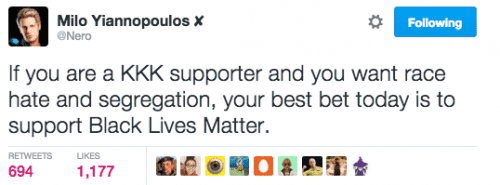

Rod Berne is a student, writer, and thought criminal. His columns run every Saturday. Follow him on Twitter.


The safe space craze has taken hold at college campuses across America. Students have been raising an uproar requesting that college campuses provide areas where students of color, and in some cases females, can relax and express themselves. They claim they want to connect without fear of being made to feel uncomfortable, unwelcome, or challenged on account of sex, orientation, gender, or race. Some have said that these spaces infringe on free speech. The students respond that the spaces would actually encourage free speech because in other areas on campus, minority students feel uncomfortable being made to defend their ideas or question the ideas of someone they think is smarter than them. And that leads us to the first point.
At Dartmouth: Black Lives Matter protesters interrupting a library study session
These students claim that it is an issue of mental safety, but the reality is that it is a reaction to a deep, terrifying, feeling of inferiority.
Some have asked why top schools like Yale, Oberlin, and Brown have been ground zero for campus eruptions. One reason is stereotype threat. This means that students of color and women are afraid of being judged by others and confirming stereotypes about their group. Black students are terrified of conveying a stupid thought and having their peers judge them as stupid.
Moreover, many of the towns in which these top colleges exist have large African American populations. This means that the service workers including the dining hall staff, custodians, and maintenance personnel are mostly black. There are also large amounts of poor and homeless people, also mostly black.
Minority students are just as status-conscious as any other Ivy League snob, and when they see the large numbers of people who look like them in positions of low-status, it freaks them out. As a result, an internal war wages within the black students, “Do people see me as a Yale student, or a black person?” When those two thoughts rub together furiously enough, a fire forms. They displace their anger and confusion they feel about themselves and their identity, and lash out at easy targets. Who are the easy targets? White and Asian students.
Math is hard! Time to switch majors.
Another indicator of inferiority is academic performance. Why are so many protests erupting at elite colleges? Put simply, some beneficiaries of affirmative action do not have the intellectual horsepower to compete at elite schools. This has been documented by UCLA law professor Richard Sander, who describes this unintended side-effect of affirmative action policies.
While affirmative action started out with noble intentions, the effect has backfired. Minority students are often selected less on academic merit and more on their ethnic background. Many of these students are smart, and top tier institutions are eager to admit them. However, a sort of one-up problem forms because a student with a decent academic record who should be in a state college gets bumped up to attend a moderately prominent college, and the student with good but not great test scores and grades gets bumped up to attend an elite institution.
A student then finds himself in a class where he has weaker academic preparation than nearly all of his classmates. Oftentimes these students find themselves in a course where the professors are not teaching at a pace designed for them—they are teaching to the “middle” of the class, introducing terms and concepts that can be difficult even for the best of students. A study at Duke found that many of these students end up changing their majors from a hard science or mathematics to humanities or social science.
They found that most of the students who are struggling are black or Latino, and the students who are excelling are Asian or white. How would that have felt to the underperforming students? Would they have imagined that this could reinforce in the minds of their classmates the stereotype that black people are not bright? Time to push that anger outward.
These feelings of inferiority motivate students of color to band together and have private spaces to talk because they’re afraid of looking stupid to smart people. In a classroom or open space where all students are free to engage, students of color are afraid of being called out for offering a baseless thought.
They then request the campus administration officials to clear out a space for them to discuss whatever inane ideas pop into their heads. One interesting thing is that smart students express idiotic thoughts all the time, but because of the inferiority issue I noted earlier, students of color are more afraid of being called out for it.
Friends of Black Lives Matter
These students want a separate space only for people who are like them. At the University of Connecticut, the college is now offering “blacks only” dorms for students who don’t want to be around other ethnic groups. Dr. Erik Hines, the Faculty Director for this initiative, said, “It is a space for African American men to, one, come together, and validate their experiences that they may have on campus.” He went on to say, “It’s also a space where they can have conversation and also talk with individuals who come from the same background who share the same experience.” Diversity is a strength. Let’s admit large numbers of black students, and block off a section of the dorm for them. What could go wrong?
Another UConn spokesperson said, “We know it’s not an issue of whether African-American males have the capability to excel in school; rather, it is their environment that sometimes inhibits their potential. At many predominantly white institutions nationwide, elements of African-American culture are harder to find, which can make some students experience a sense of detachment from their universities.”

If you are a white supremacist, these campus groups are your allies. If these students of color get their wish of “safe spaces” to segregate themselves from other students, other students won’t have to contaminate themselves by interacting with them. Black protesters and white supremacists are strange bedfellows, but that is where we have arrived in 2016.
I haven’t had to talk to a white coworker in 4 years!
Civil rights leaders organized and fought for integration, with members dying for their cause. Decades later, students are asking to be segregated again. These progressive movements begin in colleges, but they spread throughout society. Soon enough we’ll see employees of companies asking for a “woman’s safe space” or a place where “employees of diverse backgrounds” can connect without interacting with white people.
Inferiority complex, identity confusion, and the lack of academic merit to compete with their classmates have triggered these students to demand a segregated “simpleton space” to share dumb thoughts with no threat of being called out.
Read More: Why Women And Gays Should Not Be Allowed In Male-Safe Spaces